Quest Guides
Each key quest is self-contained: what it opens, what to farm, and the full NPC dialogue. Jump to a quest:
- Talisman of the Thunderous Foyer — Bastion of Thunder access flag
- The Symbol of Torden — opens Agnarr's Tower (Bastion of Thunder)
- The Crystalline Globe — opens the Aerin`Dar door (Plane of Valor)
- The Wind Etched Key — ports to Xegony Island (Plane of Air)
Key Quest: Talisman of the Thunderous Foyer
This is not an actual key but a PoP flag. It is a required part of Planar Progression. The quest takes place in Plane of Storms. When PoP first releases you’ll want a group for most of this, and 1-2 groups for the named.
Step 1 – Farming
You’ll first need to farm the following items:
- 1x Storm Giant Head
- 1x Storm Volaas Beard
- 1x Storm Satuur Sash
- 1x Storm Taarid Bone
- 2x Esoteric Medallion
Storm Giant Head
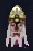
This drops off giants in any of the 3 giant camps in Plane of Storms. It is fairly common.
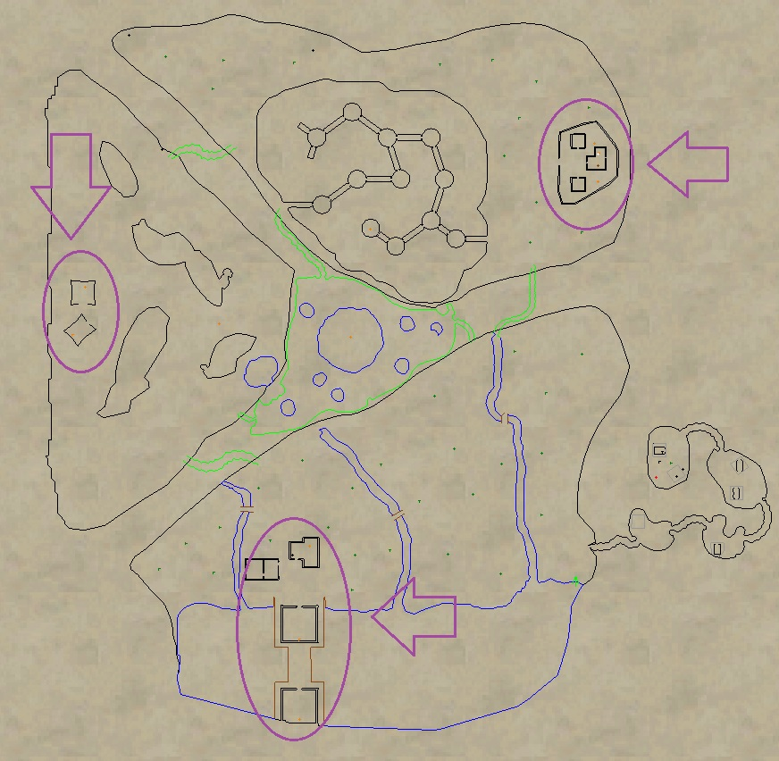
Storm Volaas Beard
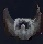
This drops off any of the giants in the Southwest camp. It is uncommon.
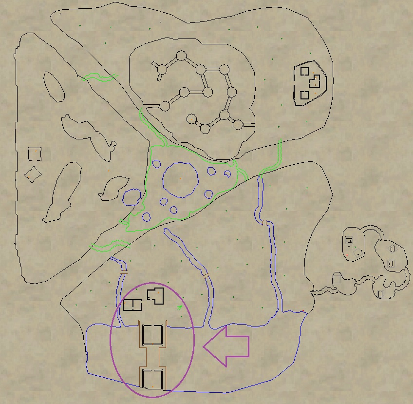
Storm Satuur Sash
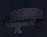
This drops off any of the giants in the Northeast camp. It is uncommon.
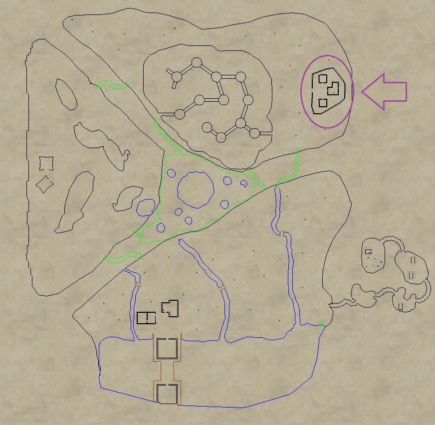
Storm Taarid Bone
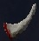
This drops off any of the giants in the Far West camp. It is uncommon.
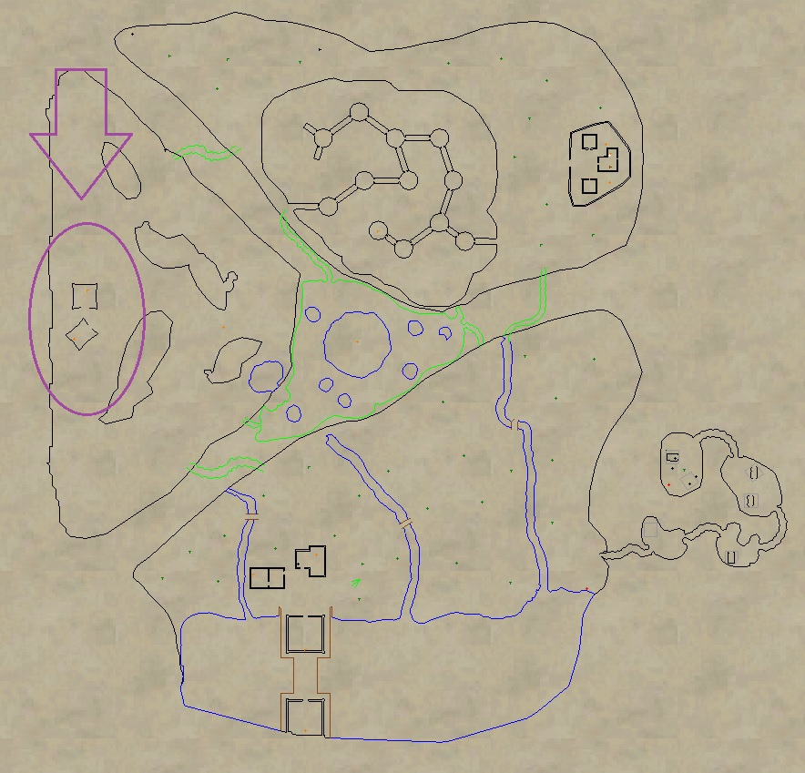
Esoteric Medallion (Collect 2)
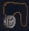
These drop off any giant in each of the camps. You’ll need 2. They are Lore, but ID differently (North, South, and West). This means you must get 1 from at least 2 of the 3 camps. The mini bosses are 1-2 groupable, with the exception of the Lord’s, which are raid bosses, so it is not recommended to trying to 1 group those.
Mobs that drop them are:
Southwest Camp
- Faruek the Bold
- Jeplak, Lord of Srerendi
- Paruek the Strong
Northeast Camp
- Laruken the Rigid
- Neffiken, Lord of Kelek`Vor
- Zertuken the Unyielding
Far West Camp
- Gurebk, Lord of Krendic
- Pendubk the Turbulent
- Solnebk the Unruly
Step 2 – Dialogue
- Locate Askr the Lost (-1250, -2600) and give him Storm Giant Head.
- Say “continue” twice to receive Askr’s Bag of Verity (container).
- Combine Storm Volaas Beard, Storm Satuur Sash, and Storm Taarid Bone in Askr’s Bag of Verity (container) to create Askr’s Sealed Bag of Verity.
- Give Askr’s Sealed Bag of Verity to Askr to Lost (receive character flag)
- Say “bastion of thunder” to receive another Askr’s Bag of Verity (container).
- Combine 2x Esoteric Medallion in Askr’s Bag of Verity (container) to receive Esotoric Meld.
- Give Esotoric Meld to to Askr to Lost (receive character flag)
- Run to the middle of the zone and click on the portal to Bastion of Thunder (receive character flag)
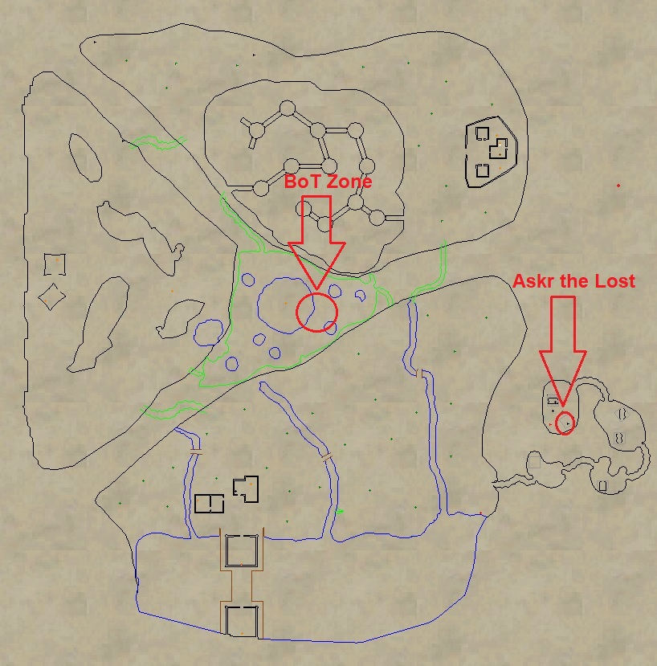
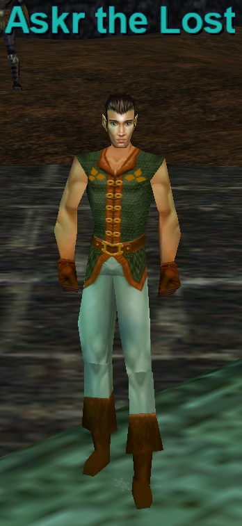
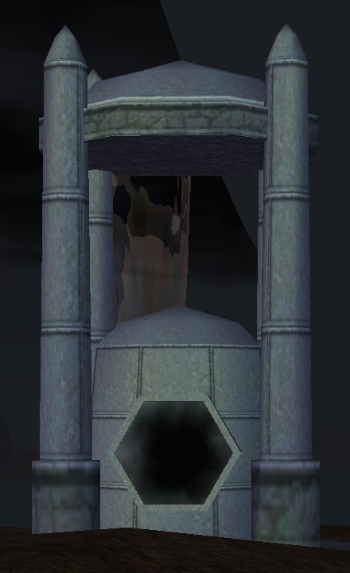
Key Quest: The Symbol of Torden
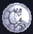
You will need to obtain 5 items from the upper towers of BoT to get access to Agnarr’s Tower.
Note: Only one person per raid needs this key to port up Agnarr’s Tower.
- Blizzard Sphere – Trash drop from Ice Wing. Uncommon Drop.
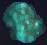
- Lightning Sphere – Trash drop from Fire Wing. Uncommon Drop.
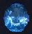
- Sandstorm Sphere – Trash drop from Earth Wing. Uncommon Drop.
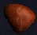
- Tornado Sphere – Trash drop from Air Wing. Uncommon Drop.
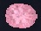
- Unadorned Symbol of Torden – Drops from any of the 4 tower bosses. You only need to kill one. Always Drops.
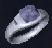
Tower Bosses
- Auliffe Chaoswind
- Brynju Thunderclap
- Eindride Icestorm
- Kuanbyr Hailstorm
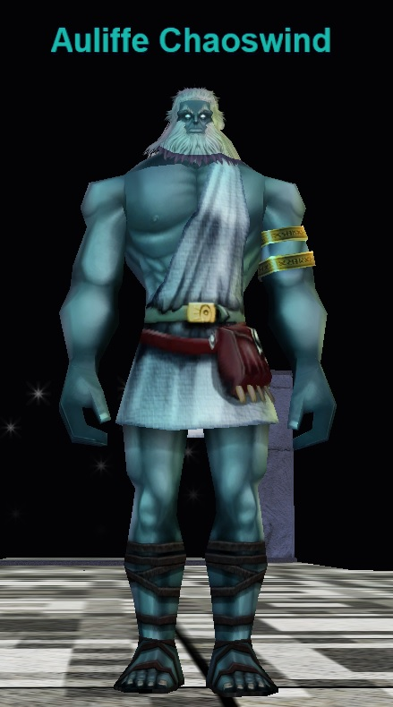
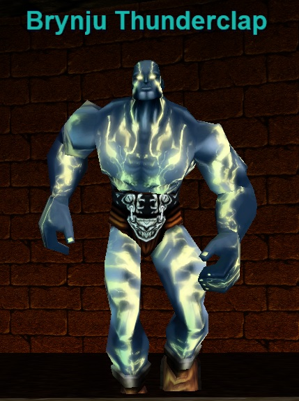
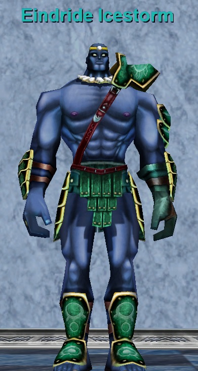
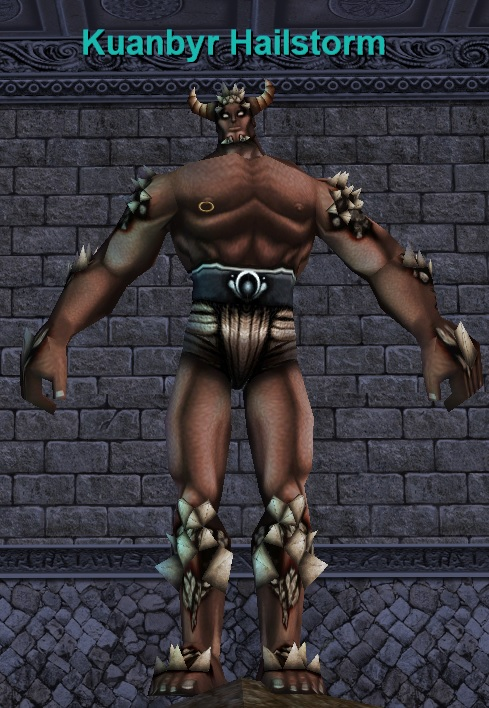
Combine the 4 spheres in the Unadorned Symbol of Torden to receive Symbol of Torden!
Key Quest: The Crystalline Globe
To complete this quest you’ll need to be fully flagged for Plane of Valor.
There are six quest items that you should farm upfront before beginning any quest dialogue. 1-4 drop in the bottom/south section of the zone, while 5 and 6 drop from the top/north.

- Planarian Larvae’s Heart : Drops from a festering worm, a planarian larvae. These mobs can be found scattered throughout the bottom section of the zone. They are mostly around undead towers and the river shore. Rare Drop.

- Razorfiend’s Heart: Drops from razorfiends in the caves on southwestern side of the zone. Uncommon Drop.
- Piece of the Crystalline Globe (Staff Icon): Drops from a Gamite Frog along the river shore in the bottom section of the zone. Rare Drop.

- Piece of the Crystalline Globe (Gem Icon): Drops from an Undead Vassal in the undead ruin buildings on the bottom section of the zone. Rare Drop.

- Crystalline Spider’s Heart: Drops from A Crystalline Arachnae. These spiders are all over the North/Top area of the zone. Common drop.
- Piece of the Crystalline Globe (Orb Icon) – Drops from A Luminii Crawler, a named crawler in the North/Top section of the zone. PH can be any crawler. Always Drops.

Once you have obtained all 6 items, you can move onto the dialogue and quest turn-in.
WARNING: This quests dialogue is VERY sensitive. Doing one thing wrong can cause an NPC not to respond. If you turn in the items while an NPC is unresponsive, you will lose your items and have to get them again. Follow along and you shouldn’t have any issues. If something seems off or isn’t working, relog your character and restart the dialogue from the start
Quest NPC Locations

Sergeant Johson Popoah and Paralin Notion Master Sergeant Aaramis Daryln Captain Ryglot Cupperhide
A. Go to Sergeant Johson Popoah (loc -961, -523). He is in the tent area. Hail him TWICE. Do not respond to his text dialogue until after the second Hail.

You say, ‘Hail, Sergeant Johson Popoah’ Sergeant Johson Popoah says ‘State your business or leave our [compound].’
You say, ‘Hail, Sergeant Johson Popoah’ Sergeant Johson Popoah says ‘Leave now before there is bloodshed.
Say “compound”Sergeant Johson Popoah says ‘This is the primary command center for Che Virtuson. We fall under the leadership and guidance of Captain Ryglot. I must now ask you to leave.’
B. Speak to Paralin Notion (loc -961, -523) who is right behind Sergeant Johson Popoah

You say, ‘Hail, Paralin Notion‘ Paralin Notion says ‘You’re either [brave], or you’re [stupid].’
Say “brave”At this point Paralin does not always respond. This is normal
Say “I will help your company“Paralin Notion says ‘We’re a part of the Battalion of Marr. We’re soldiers from Che Virtuson. We were dispatched to this part of the Plane of Valor to eliminate an age old target. Unfortunately, due to some recent events our mission has been placed on hold and our [squad] has been asked to remain behind.’
Say “squad“Paralin Notion says ‘We are a part of Ducee Tapferson. Our squad is known for our bravery. We were successful in capturing this [razorfiend] earlier today. You’ve shown some bravery as well my friend and that is the reason I request your [assistance].’
Say “razorfiend“Paralin Notion says ‘These vile beasts live in the caves west of here.’
Say “assistance“Paralin Notion says ‘Many of us here are anxious to leave. Many wish to regroup with the rest of our company. Others wish to go back to the Halls to complete the [Trials].’
Say “trials“Paralin Notion says ‘The Trials are overseen by the Heroes of Marr. It’s these Trials that allow us to rise in rank. Only those who have passed the trials are able to enter the Temple of Marr. Now if you wish to aid us I must ask you to do a few [things].’
Say “things“Paralin Notion says ‘You must find the Master Sergeant and tell him that you are here to aid the cause.’
C. Go to Master Sergeant Aaramis Daryln (loc +446, -50) in the Fort.
Do NOT hail him!

Say “I am here to aid the cause”Master Sergeant Aaramis Daryln looks you over and says in a deep voice ‘What could you possibly do to aid our cause. Perhaps you think you can slay [Aerin`Dar] himself?’ The Master Sergeant begins to laugh uncontrollably. ‘I suggest you go back to whoever filled your head with this nonsense and stop wasting my time.’
Say “Aerin‘Dar”Master Sergeant Aaramis Daryln says ‘I don’t have time to explain the glass dragon to you. Leave before I get angry.’
D. Go back to Paralin Notion (loc -961, -523)
Say ‘Hail, Paralin Notion‘Paralin Notion says ‘I’m sorry the Master Sergeant was unable to help you. Perhaps you should [prove] yourselfbefore you attempt to jump ‘into the fire’ so to speak.’
Say “prove“Paralin Notion says ‘We’ve been running into a lot of problems lately with the razorfiends and the planarian larvae. Many soldiers have been getting sick because of the infestations that they cause. Capture the hearts of a razorfiend, a crystalline spider and a planarian larvae and bring them back to me. Our squad had enough problems capturing this small razorfiend here. This will become your first so called ‘Trial’ ______. It should be enough to prove your worth.’
Turn in the 3 hearts to Paralin Notion, Planarian Larvae’s Heart, Razorfiend’s Heart, Crystalline Spider’s Heart.Paralin Notion looks at you with surprise. ‘Very good my friend. You’ve definitely proven yourself. Find the Master Sergeant. He should be able to help you this time.’You gain experience!
E. Go back to Master Sergeant Aaramis Daryln (loc +446, -50) in the Fort.
Say ‘Hail, Master Sergeant Aaramis Daryln’Master Sergeant Aaramis Daryln says ‘I heard what you did for Paralin Notion. That’s quite a noble feat indeed. Perhaps we can use your help. However, you’ll need to talk to the Captain first. After all, I can’t have you walking in the [glass lair] without permission.’
Say “glass lair“Master Sergeant Aaramis Daryln says ‘It’s the prison that [Aerin`Dar] has been encased in for many generations.’
Say “Aerin’dar”Master Sergeant Aaramis Daryln says ‘Aerin`Dar is the crystalline dragon who once roamed the Plane of Valor. During a severe rainstorm it was struck down to the very core of its being. The mighty Aerin`Dar fell from the sky and landed in what is now known as the Glassy Wasteland. Planarian larvae began to infest its body eventually turning its pure heart to evil. Our [company] was dispatched to this region of Valor to eliminate the threat.
Say “company”Master Sergeant Aaramis Daryln says ‘My squad of men are a part of Che Virtuson. However, we specifically are a part of Ducee Buled. We fall under the command of Captain Ryglot. Our [mission], for the time being, is simple. But we’ve run into some problems lately.’
Say “mission”Master Sergeant Aaramis Daryln says ‘Not too fast ______. You’ll have to speak to the Captain about that. I’m not at liberty to divulge that information at this time. That information is classified. I can tell you, but then I’d have to kill you.’ Aaramis laughs. ‘Go to Captain Ryglot and he’ll be able to fill you in with all the details.’
F. Go to Captain Ryglot Cupperhide in the tents (Loc -1010, -664).
Say, ‘Hail, Captain Ryglot Cupperhide‘ Captain Ryglot Cupperhide says ‘I am very [busy] at the moment. Perhaps you should come back at another time ______.’

Say “busy“Captain Ryglot Cupperhide says ‘I can’t go into any great detail, but the Crystalline Globe was taken from our command structure. It’s believed to have been separated into three pieces. Unfortunately, we’re having a lot of trouble relocating it. Perhaps you’d like to [help].’
Say “help“Captain Ryglot Cupperhide says ‘That’s good to hear ______. I wish we had more soldiers like yourself willing to help. I’m going to need you to locate the missing pieces of the globe and bring them back to me. After you’ve acquired the pieces perhaps you’d be able to rally enough people to lend us a hand with another [mission] objective we’ve been unable to fulfill do to our diminished numbers.’
Say “mission“Captain Ryglot Cupperhide says ‘Well, I can’t go into any details as to our main purpose is, but one of our missions was to exterminate the crystalline dragon. However, due to our company being split we are unable to go forward with this part of the operation. It has been placed on hold, pending the outcome of the [war].’
Say “war“Captain Ryglot Cupperhide says ‘Unfortunately, that is one of the things that I’m unable to speak of at this time. However, if you are [willing] to help rally some people together I may be able to release some more information to you.’
Say “willing“Captain Ryglot Cupperhide says ‘Well, that’s good to hear. Bring me back what I’ve requested and we’ll talk then.’
Turn in the 3 pieces of the Globe to Captain Ryglot Cupperhide, Piece of the Crystalline Globe (Staff Icon), Piece of the Crystalline Globe (Gem Icon), Piece of the Crystalline Globe (Orb Icon) to receive your Crystalline Globe!Captain Ryglot Cupperhide looks up at you in surprise. ‘I can’t believe you brought the missing pieces back to me so quickly. I have a team of men who have been looking for these pieces for weeks now. That’s quite a feat. Unfortunately, I will be unable to make use of the Crystalline Globe at this time. A message has been dispatched to my platoon asking us to return to the Halls of Honor. It looks as if we’ll be joining up with the rest of our company fairly soon. Keep the globe. If you’re able to rally enough people together to take on Aerin`Dar then perhaps you’ll be able accomplish an objective that our platoon was unable to do. I must go now. Good luck to you ______.’
You gain experience!

Key Quest: The Wind Etched Key

This key allows you to click the rainbow up to Xegony’s Island in Plane of Air. One person can port their entire group (up to 6 people).
Doing this quest requires that you be flagged for the Elemental Planes via the flagging progression system. If you are not, you won’t be able to receive the bag required to do the key combine because the NPC who gives it will not speak to you.
You need to obtain 5 items:
- Pouch of Swirling Winds
- Mystical Essence of Wind
- Mystical Essence of Smoke
- Mystical Essence of Mist
- Mystical Essence of Dust


Combine all 4 Mystical Essences into the Pouch of Swirling Winds to receive Wind Etched Key.
Pouch of Swirling Winds
Say “Plane of Air” to Sarhya the Dawnbreeze to receive Pouch of Swirling Winds. You must be Elemental flagged to receive this bag. Sarhya the Dawnbreeze is located at the Plane of Air zone in Plane of Tranquility.


Mystical Essences
The Mysical Essences drop from various Wing Bosses called the Avatar’s. You must first complete a ring event to spawn each Avatar. The Avatar’s are triggered from the corresponding ring:
- Mystical Essence of Wind – Stormrider Ring Event – Spawns Avatar of Wind
- Mystical Essence of Smoke – Elemental Ring Event – Spawns Avatar of Smoke
- Mystical Essence of Mist – Phoenix Ring Event – Spawns Avatar of Mist
- Mystical Essence of Dust – Spider Ring Event – Spawns Avatar of Dust
Below is a map of where each is located: